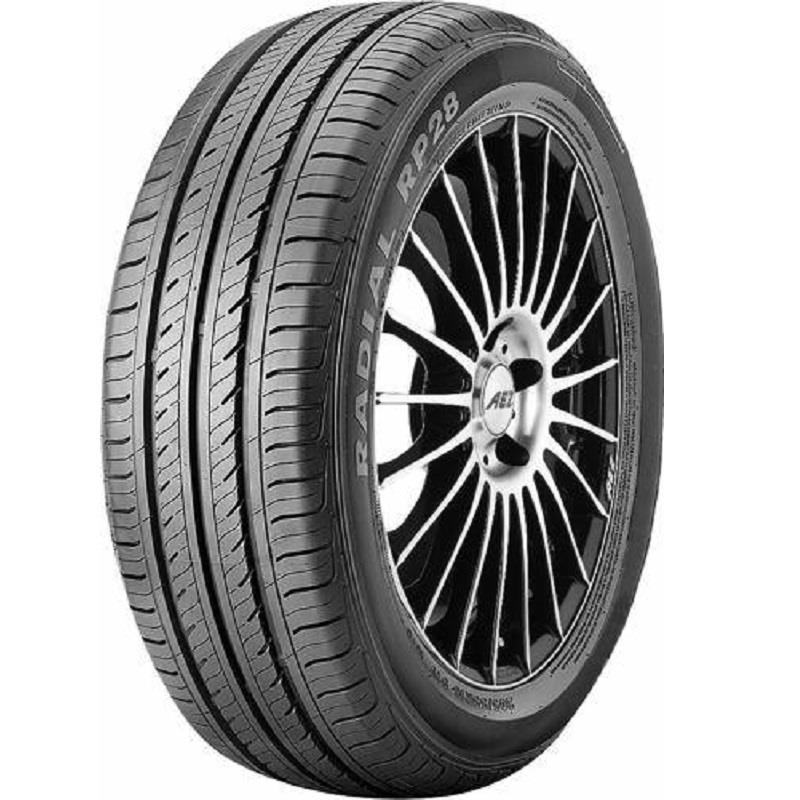

Trazano RP28 195/55R15

RM 129.00
The Trazano RP28 is an economical passenger car tyre designed for everyday driving, reliable road grip and riding comfort. Its tread pattern is engineered to provide stable handling on wet and dry roads, while its drainage grooves help disperse water and reduce aquaplaning risk. An affordable choice for daily city driving and highway cruising. Key Features: • Reliable wet and dry grip • Stable handling and steering response • Smooth and comfortable ride • Efficient water drainage • Suitable for everyday driving • Affordable and practical performance Specifications: • Size: 195/55R15 • Load & Speed Rating: 85V • Maximum Load: 515 kg • Maximum Speed: 240 km/h • Tyre Category: Economy Touring • Fuel Efficiency: E (EU Rating) • Wet Grip: C (EU Rating) • External Noise: 71 dB • Brand Origin: China • Manufacturer: ZC Rubber
Klang Hock Li Tyre Services Sdn Bhd, Klang, Selangor, Malaysia.
View live product details and enquire